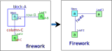
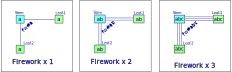
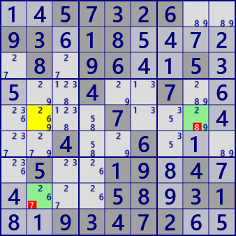
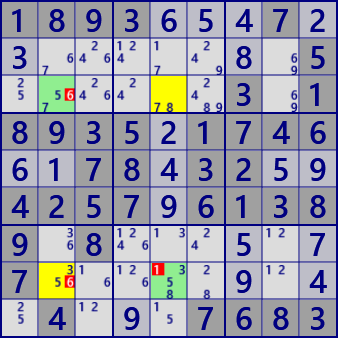
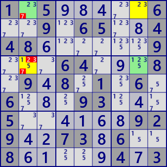
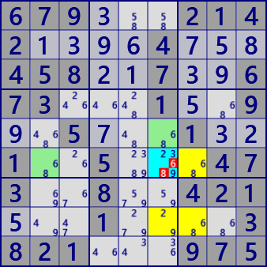
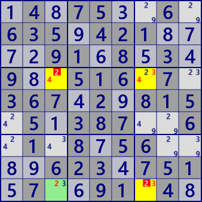
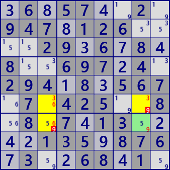
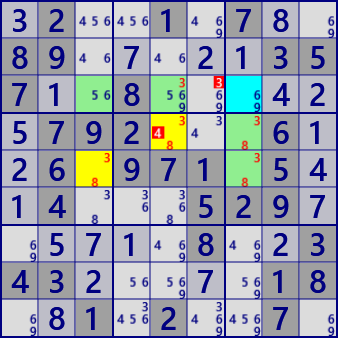

Fireworks
Fireworkは、盤面上に生じる数字配置の状態で、これだけでは数独数字を肯定/否定することはありません。
しかし、複数のfireworkを組み合わせたり、他の数字配置と組み合わせて数独解法アルゴリズムとなります。
ALS、リンクなどと同様の、数独盤面上の状態です。
なお、Fireworkアルゴリズムは、次のHPを参考にしています。
The New Sudoku Players' Forum
http://forum.enjoysudoku.com/fireworks-t39513.html
Fireworkの特徴として、他のアルゴリズムと比較すると論理はやや複雑ですが、プログラムコードはきわめて単純です（GNPXの場合）。
短時間試行の範囲での印象ですが、
完全な Firework (Stemと2のLeaf) を用いる場合は少なく、不完全な Firework (Stemと1のLeaf)で組み立てるケースが多いです。
Firework の定義
Fireworkは、次のように定義します。
- 盤面上の 数字”n”の配置に着目する。
- 数字”n”を候補に持つセル A を選ぶ。
- セルA のブロックを block-Aとする。
- block-A外で、かつセルA と同じ行Houseをrow-Bとする。
row-BにセルBを選ぶ。Bは数字”n”を候補に持つ row-B内の唯一のセルとする。 - block-A外で、かつセルA と同じ列Houseをcolumn-Cとする。
column-CにセルCを選ぶ。Cは数字”n”を候補に持つ column-C内の唯一のセルとする。 - Fireworkの構成セルが強いリンクでつながっている状態を、Firework-sとする。
命題 : Firework(セルA,B,C)は、少なくとも1個の数字"n"を含む
- セルBまたはセルCが 数字"n"なら、命題は正しい。セルB,Cが両方とも 数字"n"のこともある。
- セルB、C が両方とも数字"n"でないなら、セルAは 数字"n" となり、命題は正しい。
- セルA、B、Cがいずれも 数字"n" でないと、数独の問題として破綻する。
- 最初の図で、a1,a2,a3,a4 のいずれかが数字"n"となることはある。２つ以上のセルが数字"n"となることはない。
この場合も、セルBまたはセルCが 数字"n"であり、命題は正しい。 - Firework-sでは、セルB、Cの状態は同じとなる。
以下では、Fireworkを次のように表記する。

Fireworkアルゴリズムでは、重なったFireworkを用いるものがある。

Fireworkには、次のような特殊なタイプもある。
- Strong型 : StemとLeafが strongLinkでつながったタイプ。2つのLeafは、候補数字と属性が一致する。
- Leafが1つしかないタイプ。

Fireworks 解析アルゴリズム
(1) Firework Triple
このとき、stemとLeaf-1,2のセルは3数字で Locked であり、3数字以外の候補は除外できます。
不完全なFireworkでも Firework triple は成り立ちます。Leaf部分が2数字となるケースです。Firework tripleは、不完全なパターンで多く見つかります。
 Firework_Triple
Firework_Triple
Firework: r6c8 <#246> / r2c8 r6c1
..128495.82.597..1945361872.5782.1.9...94.5.7..9715...562138794398472615..46592..
 Firework_TripleFirework: r5c2 <#269> / r5c8 r8c2
1457326..936185472.8.9641535..4..7.6....7...4..4..6.1..5..198474...58931819347265
(2) Firework Quadruple
2つの firework が重なっている状態を Fireworkx2 と表記します(stemとLeafが全て一致する)。
これは、4セルに4数字が Locked となっています。従って、4セルの4数字以外の候補は除外できます。
Firework Quadrupleは、不完全なFireworkを用いるパターンでも可能です。


Firework_Quadruple
Firework1 : r8c2 <#35> / r3c2 r8c5
Firework2 : r3c5 <#78> / r3c2 r8c5
1893654723.....8.5......3.18935217466178432594257961389.8...5.77.....9.4.4.9.7683
 Firework_QuadrupleFirework1 : r4c2 <#15> / r1c2 r4c8
Firework2 : r1c8 <#23> / r1c2 r4c8
1.5984..6..9.65.84486.....9...64.9.8.948.1.6.6.8.93.4.5..4168929427386..861..9473
(3) Firework WWing
Firework x2 と、2つのbivalue Cell(ALS)が次の図のように配置されているとします。
この状態は Locked で、交差する位置にある数字要素（次図の"a")は除外できます。

 Firework_WWing
Firework_WWing
Firework : r3c3 <#26> / r3c5 r5c3
Assist : r4c5#26 r5c9#26
Exclude : r5c5#26
1..89..4.8..21...7...7.59813154.9..8.8.5..41...41.8395..1382.646.89..1...236.18.9
 Firework_WWingFirework : r8c7 <#68> / r6c7 r8c6
Assist : r6c2#68 r5c6#68
Exclude : r6c6#68
6793..21421396475845821739673...15.99.57..1321..5...473..8..4215..1....3821...975
(4) Firework LWing
Firework x2 と、1つの強fireworkがLeafを共有しているとします。
この状態で、FireworkとLeafセルから強firework の数字（次図の"x")は除外できます。


Firework_WWing
Firework : r4c7 <#34> / r4c3 r9c7
Assist : r9c3 <#2> / r4c3 r9c7v
Exclude : r4c3#2 r9c7#2v
148753.6.63594218772916853498.516.7.367429815.51387..6.1.8756..89623475157.691.48
 Firework_WWingFirework : r6c3 <#36> / r6c8 r7c3
Assist : r7c8 <#9> / r6c8 r7c3
Exclude : r6c8#9 r7c3#9
148753.6.63594218772916853498.516.7.367429815.51387..6.1.8756..89623475157.691.48
(5) Firework ALP
Fireworkx2 と、1つのBivalueセルが fig-1 のように配置されているとします。
Fireworkの定義により、BivalueセルとStemの数字配置は次の2通りのパターンがあります(fig-2)。
従って、FireworkのStemとBivalue Cellは、”a,b"の Locked になります。
Stemから ”a,b" 以外の数字は除外できます(fig-3)。
 Firework_ALPs
Firework_ALPsForework : r4c3 <#35> / r4c7 r9c3
rcIntersect : Intersect_Cell:r9c7v
.37986.14914752683..841379.8..179.4.19236485747.5281.9.218479..789635421.4.291.78
(6) Firework Double_ALP
Double_ALPは、2つのALPが Bivalue を軸に対称に結びついた配置です。
それぞれの ALP-s は、ALP-s の論理で Stemから ”a,b" 以外の数字は除外できます。
ALPでは、Bivalueセルの数字を決めると、ALPの数字”a,b" の配置が決まります(fig-2)。
また、Firework以外の部分から ”a,b" が制限されます(fig-2,3)。


Firework_DALP
Forework1:
Stem;r4c5 sw:False FreeB:38
(rc1,rc2):r3c5 r4c7
Forework2:
Stem;r4c5 sw:False FreeB:38
(rc1,rc2):r3c5 r4c7
rcIntersect:r3c7
32..1.78.89.7.213571.8...425792...6126.971.5414...5297.571.8.23432..7.18.81.2..7.